from pathlib import Path
import numpy as np
import matplotlib.pyplot as plt
from PIL import Image
from scipy import ndimage as ndi
from skimage import morphology as morf
from skimage.measure import label, regionprops
plt.rcParams.update({"figure.dpi": 110, "savefig.dpi": 300,
"font.size": 10, "axes.titlesize": 11})
# El cuaderno se ejecuta desde notebooks/ o desde la raiz del proyecto.
RAIZ = Path("..") if Path("../figs").exists() else Path(".")
GZ = RAIZ / "figs" / "figs_gonzalez"
MRI = RAIZ / "figs" / "08-segm-II" / "mri"
FIGDIR = RAIZ / "figs" / "07-morpho"
GUARDAR = FIGDIR.exists() # las laminas leen las figuras desde ahi
def gonzalez(capitulo, nombre, binaria=False):
"""Carga una imagen del material de Gonzalez y Woods."""
carpetas = {9: "DIP3E_Original_Images_CH09", 10: "DIP3E_Original_Images_CH10",
3: "DIP3E_Original_Images_CH03"}
img = Image.open(GZ / carpetas[capitulo] / nombre)
if binaria:
a = np.array(img.convert("L")) > 127
return a if a.mean() < 0.5 else ~a # objeto = True, fondo = False
return np.array(img.convert("L")).astype(float)
def mri(nombre):
return np.array(Image.open(MRI / nombre).convert("L")).astype(float)
def disco(r):
y, x = np.ogrid[-r:r + 1, -r:r + 1]
return x * x + y * y <= r * r
def cuadrado(n):
return np.ones((n, n), dtype=bool)
def cruz(n):
b = np.zeros((n, n), dtype=bool)
b[n // 2, :] = True
b[:, n // 2] = True
return b
def mostrar(imagenes, titulos, ncol=None, ancho=3.0, alto=None, cmap="gray",
vmin=None, vmax=None, nombre=None):
"""Muestra una lista de imagenes en una fila (o varias) con sus titulos."""
n = len(imagenes)
ncol = ncol or n
nfil = int(np.ceil(n / ncol))
h0, w0 = imagenes[0].shape[:2]
alto = alto or ancho * h0 / w0
fig, axs = plt.subplots(nfil, ncol, figsize=(ancho * ncol, alto * nfil),
squeeze=False)
for ax in axs.ravel():
ax.axis("off")
for ax, im, t in zip(axs.ravel(), imagenes, titulos):
if im.dtype == bool:
ax.imshow(im, cmap="gray", vmin=0, vmax=1, interpolation="nearest")
else:
ax.imshow(im, cmap=cmap, vmin=vmin, vmax=vmax, interpolation="nearest")
ax.set_title(t)
plt.tight_layout()
if nombre and GUARDAR:
fig.savefig(FIGDIR / nombre, bbox_inches="tight")
return fig, axs
def guardar(fig, nombre):
if GUARDAR:
fig.savefig(FIGDIR / nombre, bbox_inches="tight")Morfología matemática: cuaderno de ejemplos
Procesamiento de imágenes médicas, Alejandro Veloz.
Este cuaderno acompaña la clase 07 y reproduce, método por método, los ejemplos de las láminas. Cada sección tiene la misma estructura: la definición en una o dos líneas, el código que la implementa y una figura con el resultado sobre una imagen real. Las imágenes provienen del material del libro de Gonzalez y Woods (Digital Image Processing, 3a edición, capítulos 9 y 10) y del caso clínico de glioblastoma usado en las clases de segmentación (cortes axiales T1 con contraste, T1 FLAIR y T2 FLAIR).
Contenido
- Preparación y operadores básicos implementados a mano.
- Morfología binaria: dilatación, erosión, apertura, cierre, hit-or-miss.
- Algoritmos morfológicos: frontera, llenado, componentes conexas, envolvente convexa, adelgazamiento, engrosamiento, esqueleto y poda.
- Reconstrucción morfológica.
- Morfología en escala de grises: dilatación, erosión, apertura, cierre, gradiente, top-hat, bottom-hat, granulometría y textura.
- Aplicación 1. Segmentación por Otsu mejorada con operadores morfológicos sobre una MRI de cerebro.
- Aplicación 2. Realce de contraste de una MRI de cerebro con filtros morfológicos.
Requisitos: numpy, scipy, scikit-image, matplotlib y Pillow.
1. Operadores básicos implementados a mano
Un elemento estructurante \(B\) es una máscara booleana pequeña con un origen en su centro. La dilatación de \(A\) por \(B\) es la unión de los traslados de \(A\) por cada punto de \(B\), \[A\oplus B=\bigcup_{b\in B}A_b,\] y la erosión es la intersección de los traslados por los puntos de \(\hat B\), \[A\ominus B=\bigcap_{b\in B}A_{-b}.\] Ambas se implementan desplazando la imagen una vez por cada punto de \(B\) y acumulando con OR o con AND. Para el resto del cuaderno usaremos las versiones de scipy.ndimage, que hacen lo mismo en C, y verificamos aquí que coinciden.
def desplazamientos(B):
cy, cx = np.array(B.shape) // 2
ys, xs = np.where(B)
return list(zip(ys - cy, xs - cx))
def dilatar(A, B):
A = A.astype(bool)
py, px = np.array(B.shape) // 2
P = np.pad(A, ((py, py), (px, px)))
h, w = A.shape
salida = np.zeros_like(A)
for dy, dx in desplazamientos(B):
salida |= P[py - dy:py - dy + h, px - dx:px - dx + w] # traslado por b
return salida
def erosionar(A, B):
A = A.astype(bool)
py, px = np.array(B.shape) // 2
P = np.pad(A, ((py, py), (px, px)))
h, w = A.shape
salida = np.ones_like(A)
for dy, dx in desplazamientos(B):
salida &= P[py + dy:py + dy + h, px + dx:px + dx + w] # traslado por -b
return salida
rng = np.random.default_rng(0)
A = ndi.binary_opening(rng.random((60, 80)) > 0.45, cuadrado(3))
for B in [cuadrado(3), cruz(5), disco(3)]:
assert np.array_equal(dilatar(A, B), ndi.binary_dilation(A, B))
assert np.array_equal(erosionar(A, B), ndi.binary_erosion(A, B))
print("dilatar y erosionar coinciden con scipy.ndimage")
mostrar([A, dilatar(A, cuadrado(3)), erosionar(A, cuadrado(3))],
["$A$", r"$A\oplus B$", r"$A\ominus B$"], ancho=3.2);dilatar y erosionar coinciden con scipy.ndimage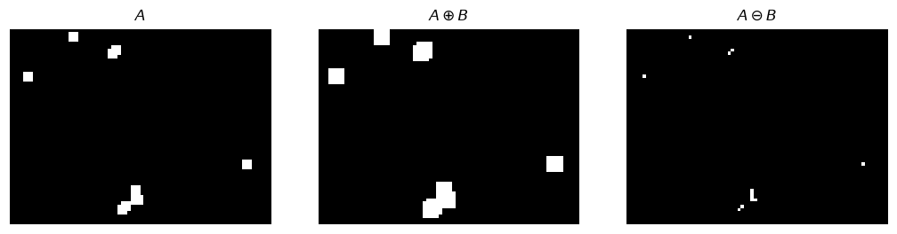
Observación sobre el borde. scipy.ndimage supone que fuera de la imagen hay fondo (border_value=0), de modo que un objeto que toca el borde se erosiona también por ese lado. Es la convención que usaremos.
2. Morfología binaria
2.1 Dilatación
La dilatación agrega a \(A\) todos los puntos donde \(\hat B\) trasladado toca al objeto. Con texto degradado, un cuadrado \(3\times3\) une trazos separados por uno o dos pixeles (Gonzalez y Woods, figura 9.7).
texto = gonzalez(9, "Fig0907(a)(text_gaps_1_and_2_pixels).tif", binaria=True)
texto_dil = ndi.binary_dilation(texto, cuadrado(3))
# recorte para ver el detalle
r = (slice(150, 245), slice(60, 300))
fig, axs = mostrar([texto, texto_dil, texto[r], texto_dil[r]],
["Texto con cortes", r"$A\oplus B$, $B$ cuadrado $3\times3$",
"Detalle del original", "Detalle dilatado"],
ncol=2, ancho=4.2, alto=3.6, nombre="ej_dilatacion_texto.png")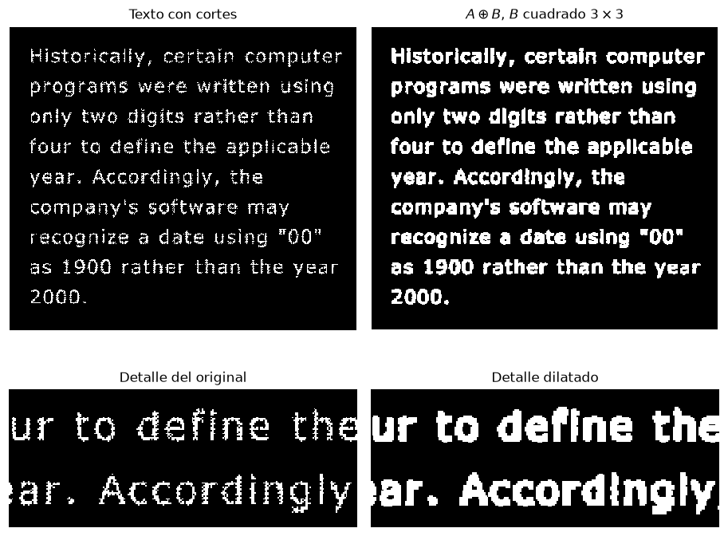
2.2 Erosión
La erosión conserva sólo las posiciones donde \(B\) cabe completo dentro de \(A\). Cuanto mayor es \(B\), más estructuras desaparecen. En la máscara de un circuito (figura 9.5 del libro), un cuadrado de \(11\times11\) elimina las líneas más delgadas, uno de \(15\times15\) elimina también las de grosor intermedio y uno de \(45\times45\) deja únicamente los cuadrados grandes, además reducidos.
mascara = gonzalez(9, "Fig0905(a)(wirebond-mask).tif", binaria=True)
erosiones = [ndi.binary_erosion(mascara, cuadrado(n)) for n in (11, 15, 45)]
mostrar([mascara] + erosiones,
["Máscara original", r"$B$ de $11\times11$", r"$B$ de $15\times15$",
r"$B$ de $45\times45$"], ancho=3.0, nombre="ej_erosion_mascara.png");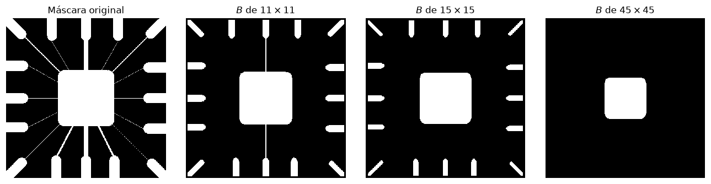
2.3 Apertura y cierre
La apertura \(A\circ B=(A\ominus B)\oplus B\) elimina lo que no contiene a \(B\) y el cierre \(A\bullet B=(A\oplus B)\ominus B\) rellena lo que \(B\) no puede recorrer por el fondo. Sobre una huella con ruido impulsivo (figura 9.11), la apertura elimina los puntos blancos aislados y el cierre posterior rellena los puntos negros dentro de las crestas. La secuencia completa muestra los cuatro pasos intermedios.
huella = gonzalez(9, "Fig0911(a)(noisy_fingerprint).tif", binaria=True)
B = cuadrado(3)
h_ero = ndi.binary_erosion(huella, B)
h_ape = ndi.binary_dilation(h_ero, B) # apertura
h_dil = ndi.binary_dilation(h_ape, B)
h_cie = ndi.binary_erosion(h_dil, B) # cierre de la apertura
assert np.array_equal(h_ape, ndi.binary_opening(huella, B))
assert np.array_equal(h_cie, ndi.binary_closing(h_ape, B))
mostrar([huella, h_ero, h_ape, h_dil, h_cie],
["Huella con ruido", r"$A\ominus B$", r"$A\circ B$",
r"$(A\circ B)\oplus B$", r"$(A\circ B)\bullet B$"],
ancho=2.6, nombre="ej_apertura_cierre_huella.png");
print("pixeles de objeto: original", huella.sum(), " apertura", h_ape.sum(),
" apertura+cierre", h_cie.sum())pixeles de objeto: original 21403 apertura 18915 apertura+cierre 19212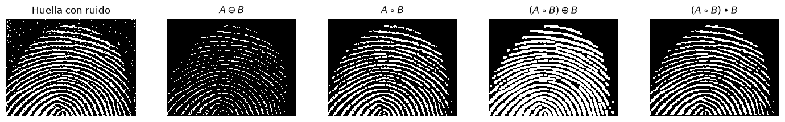
2.4 Transformación hit-or-miss
\(A\otimes B=(A\ominus B_1)\cap(A^c\ominus B_2)\) detecta las posiciones donde \(B_1\) cabe en el objeto y, simultáneamente, \(B_2\) cabe en el fondo. Sirve para localizar una forma exacta. En la imagen sintética hay cuadrados de tres tamaños y un rectángulo; se busca únicamente el cuadrado de \(9\times9\) usando \(B_1\) igual al cuadrado y \(B_2\) igual a un anillo de un pixel a su alrededor.
formas = np.zeros((90, 130), dtype=bool)
formas[10:19, 10:19] = True # cuadrado 9x9
formas[30:43, 25:38] = True # cuadrado 13x13
formas[55:64, 70:79] = True # cuadrado 9x9
formas[12:21, 60:85] = True # rectangulo 9x25
formas[60:65, 15:20] = True # cuadrado 5x5
formas[35:44, 95:104] = True # cuadrado 9x9 pegado a otro
formas[35:44, 104:113] = True
B1 = np.pad(cuadrado(9), 1) # 11x11, 1 en el cuadrado
B2 = np.pad(np.zeros((9, 9), bool), 1, constant_values=True) # anillo
detect = ndi.binary_hit_or_miss(formas, structure1=B1, structure2=B2)
resultado = ndi.binary_dilation(detect, cuadrado(9)) # recuperar la forma hallada
mostrar([formas, np.pad(B1, 3), np.pad(B2, 3), resultado],
["Formas", r"$B_1$ (cuadrado de $9\times9$)", r"$B_2$ (anillo de 1 pixel)",
r"$A\otimes B$ dilatado por $B_1$"],
ancho=3.0, alto=2.4, nombre="ej_hitmiss_formas.png")
print("posiciones detectadas:", [(int(y), int(x)) for y, x in zip(*np.where(detect))])posiciones detectadas: [(14, 14), (59, 74)]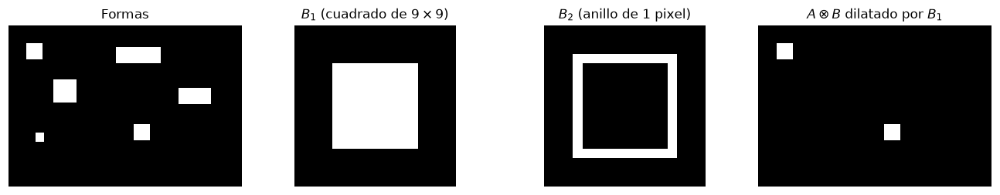
Sólo se detectan los dos cuadrados aislados de \(9\times9\). El que está pegado a otro no cumple la condición del fondo (\(B_2\) no cabe en \(A^c\)) y el de \(13\times13\) cumple la del objeto pero no la del fondo. Sin \(B_2\), la erosión por \(B_1\) marcaría también los cuadrados grandes y el rectángulo.
3. Algoritmos morfológicos
3.1 Extracción de frontera
\(\beta(A)=A-(A\ominus B)\). Con un cuadrado \(3\times3\) la frontera tiene un pixel de ancho (figura 9.14).
lincoln = gonzalez(9, "Fig0914(a)(licoln from penny).tif", binaria=True)
frontera = lincoln & ~ndi.binary_erosion(lincoln, cuadrado(3))
frontera5 = lincoln & ~ndi.binary_erosion(lincoln, cuadrado(5))
mostrar([lincoln, frontera, frontera5],
["$A$", r"$\beta(A)$, $B$ de $3\times3$", r"$\beta(A)$, $B$ de $5\times5$"],
ancho=2.8, nombre="ej_frontera_lincoln.png");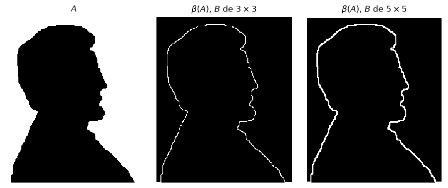
3.2 Llenado de regiones
Desde una semilla \(p\) dentro de un hueco, \(X_k=(X_{k-1}\oplus B)\cap A^c\) crece hasta estabilizarse; la frontera actúa como muralla. En la imagen de esferas con reflejos (figura 9.16), cada reflejo es un hueco oscuro dentro de una esfera clara. Se llena primero uno solo desde una semilla y después todos con la versión automática, que equivale a reconstruir el fondo desde el borde de la imagen.
esferas = gonzalez(9, "Fig0916(a)(region-filling-reflections).tif", binaria=True)
def llenar_desde(A, semilla, B=None, max_iter=500):
B = cruz(3) if B is None else B
X = np.zeros_like(A)
X[semilla] = True
for k in range(1, max_iter + 1):
Xn = ndi.binary_dilation(X, B) & ~A
if np.array_equal(Xn, X):
return X, k
X = Xn
return X, max_iter
# semilla dentro de un reflejo: el centro del hueco mas grande
huecos = ndi.binary_fill_holes(esferas) & ~esferas
lab_h, n_h = ndi.label(huecos)
tam = ndi.sum(huecos, lab_h, range(1, n_h + 1))
mayor = 1 + int(np.argmax(tam))
cy, cx = ndi.center_of_mass(lab_h == mayor)
X, iters = llenar_desde(esferas, (int(cy), int(cx)))
uno = esferas | X
todas = ndi.binary_fill_holes(esferas)
mostrar([esferas, uno, todas],
["Esferas con reflejos", f"Un hueco llenado ({iters} iteraciones)",
"Todos los huecos llenados"], ancho=3.0,
nombre="ej_llenado_esferas.png")
print(f"huecos detectados: {n_h}; el mayor tiene {int(tam.max())} pixeles")huecos detectados: 18; el mayor tiene 673 pixeles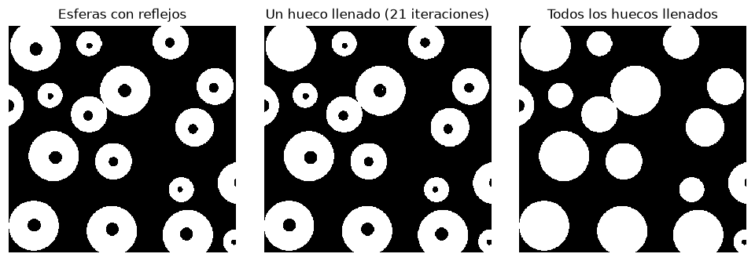
3.3 Componentes conexas
Una componente es un subconjunto maximal de pixeles de objeto conectados entre sí. El ejemplo clásico (figura 9.18) es una radiografía de un filete de pollo con astillas de hueso. Se umbraliza, se erosiona con un cuadrado de \(5\times5\) para eliminar el ruido y se etiquetan las componentes con conectividad 8. La tabla de áreas permite separar astillas de ruido residual.
pollo = gonzalez(9, "Fig0918(a)(Chickenfilet with bones).tif")
umbral = pollo > 200
limpio = ndi.binary_erosion(umbral, cuadrado(5))
etiquetas, n = ndi.label(limpio, structure=cuadrado(3)) # conectividad 8
areas = ndi.sum(limpio, etiquetas, range(1, n + 1)).astype(int)
fig, axs = mostrar([pollo, umbral, limpio, etiquetas],
["Radiografía", "Umbral $T=200$", r"Erosión $5\times5$",
f"{n} componentes"], ncol=2, ancho=4.6, alto=2.2,
cmap="nipy_spectral")
axs[0, 0].imshow(pollo, cmap="gray"); axs[0, 1].imshow(umbral, cmap="gray")
axs[1, 0].imshow(limpio, cmap="gray")
for k in range(1, n + 1):
cy, cx = ndi.center_of_mass(etiquetas == k)
axs[1, 1].text(cx, cy - 8, str(k), color="white", fontsize=7, ha="center")
guardar(fig, "ej_componentes_huesos.png")
orden = np.argsort(-areas)
print("componente area (pixeles)")
for k in orden:
print(f"{k + 1:>10d} {areas[k]:>6d}")componente area (pixeles)
1 957
2 739
4 224
14 110
10 83
7 49
15 48
11 41
8 39
9 32
6 12
5 9
13 4
3 2
12 1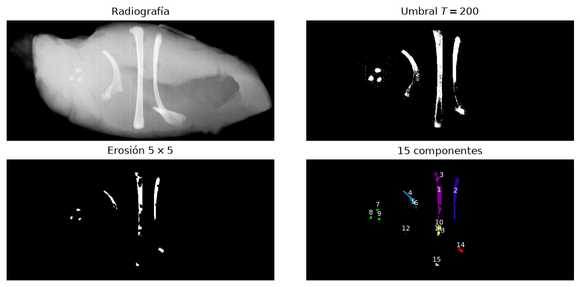
3.4 Envolvente convexa
El algoritmo morfológico aplica hit-or-miss con cuatro elementos estructurantes \(B^1,\dots,B^4\) y acumula, \(X^i_k=(X^i_{k-1}\otimes B^i)\cup X^i_{k-1}\), hasta convergencia; la envolvente es la unión de los cuatro resultados. Cada \(B^i\) detecta un pixel de fondo con tres pixeles de objeto alineados a un lado, que es la configuración local de una concavidad. El resultado puede exceder la envolvente convexa exacta (figura 9.20), por lo que suele recortarse a la caja que contiene al objeto.
X_ = 0 # notacion: 0 en ambos arreglos significa "no importa"
B_hit = [np.array([[1, 0, 0], [1, 0, 0], [1, 0, 0]], bool),
np.array([[1, 1, 1], [0, 0, 0], [0, 0, 0]], bool),
np.array([[0, 0, 1], [0, 0, 1], [0, 0, 1]], bool),
np.array([[0, 0, 0], [0, 0, 0], [1, 1, 1]], bool)]
B_miss = [np.array([[0, 0, 0], [0, 1, 0], [0, 0, 0]], bool)] * 4
def envolvente_morfologica(A, max_iter=200):
resultados = []
for hit, miss in zip(B_hit, B_miss):
X = A.copy()
for _ in range(max_iter):
Xn = X | ndi.binary_hit_or_miss(X, hit, miss)
if np.array_equal(Xn, X):
break
X = Xn
resultados.append(X)
return resultados
obj = np.zeros((70, 76), dtype=bool)
yy, xx = np.mgrid[:70, :76]
obj |= ((yy - 35) / 11) ** 2 + ((xx - 31) / 9) ** 2 < 1
obj |= ((yy - 39) / 9) ** 2 + ((xx - 47) / 10) ** 2 < 1
obj[21:31, 39:45] = True
obj[33:38, 29:49] = False # concavidad central
Xs = envolvente_morfologica(obj)
C_morf = Xs[0] | Xs[1] | Xs[2] | Xs[3]
ys, xs = np.where(obj)
caja = np.zeros_like(obj)
caja[ys.min():ys.max() + 1, xs.min():xs.max() + 1] = True
C_exacta = morf.convex_hull_image(obj)
mostrar([obj, Xs[0], Xs[1], Xs[2], Xs[3], C_morf, C_morf & caja, C_exacta],
["$A$", "$X^1_\\infty$", "$X^2_\\infty$", "$X^3_\\infty$", "$X^4_\\infty$",
"Unión $C(A)$", "Recortada a la caja", "Envolvente exacta"],
ncol=4, ancho=2.6, nombre="ej_envolvente.png")
print("area objeto", obj.sum(), " morfologica", (C_morf & caja).sum(),
" exacta", C_exacta.sum())area objeto 526 morfologica 773 exacta 725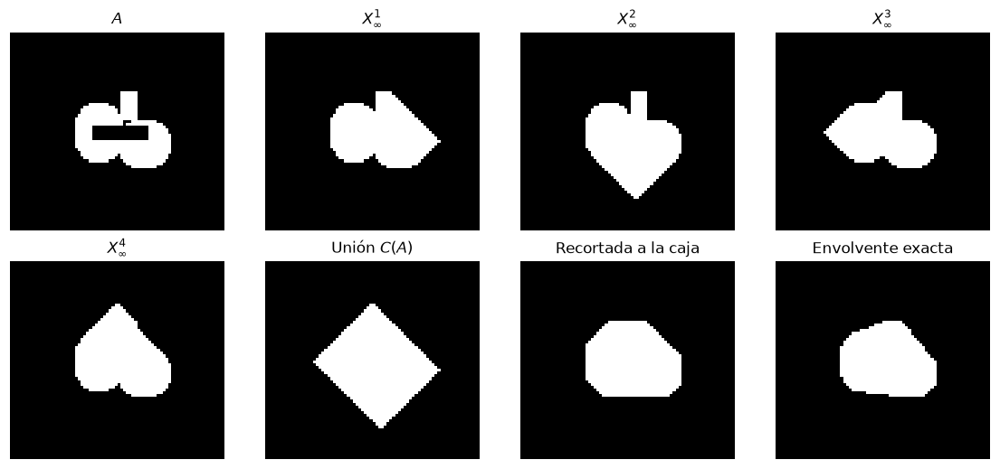
3.5 Adelgazamiento
\(A\oslash B=A-(A\otimes B)\) elimina los pixeles de borde que calzan con un patrón, y la secuencia \(\{B\}\) de ocho patrones rotados se aplica cíclicamente hasta que nada cambia. Los patrones de Gonzalez y Woods (figura 9.21) son dos plantillas y sus rotaciones de \(90^\circ\); en cada una, los unos de \(B_1\) deben estar en el objeto, los unos de \(B_2\) en el fondo y el resto no importa.
def rotaciones(hit, miss):
return [(np.rot90(hit, k), np.rot90(miss, k)) for k in range(4)]
hit1 = np.array([[0, 0, 0], [0, 1, 0], [1, 1, 1]], bool)
miss1 = np.array([[1, 1, 1], [0, 0, 0], [0, 0, 0]], bool)
hit2 = np.array([[0, 0, 0], [1, 1, 0], [1, 1, 0]], bool)
miss2 = np.array([[0, 1, 1], [0, 0, 1], [0, 0, 0]], bool)
SECUENCIA = []
for (h1, m1), (h2, m2) in zip(rotaciones(hit1, miss1), rotaciones(hit2, miss2)):
SECUENCIA += [(h1, m1), (h2, m2)]
def adelgazar(A, secuencia=SECUENCIA, pasadas=None, max_iter=200):
"""Aplica A = A - (A hit-or-miss B^i) ciclicamente hasta convergencia."""
A = A.copy()
for it in range(max_iter):
previo = A.copy()
for hit, miss in secuencia:
A = A & ~ndi.binary_hit_or_miss(A, hit, miss)
if np.array_equal(A, previo) or (pasadas is not None and it + 1 >= pasadas):
return A, it + 1
return A, max_iter
T = np.zeros((80, 80), dtype=bool)
T[14:63, 34:47] = True
T[24:37, 18:62] = True
T[48:61, 20:35] = True
T[47:66, 52:64] = True
T1, _ = adelgazar(T, pasadas=1)
T3, _ = adelgazar(T, pasadas=3)
Tf, it = adelgazar(T)
zs = morf.skeletonize(T, method="zhang")
mostrar([T, T1, T3, Tf, zs],
["$A$", "Una pasada", "Tres pasadas", f"Convergencia ({it} pasadas)",
"Zhang y Suen"], ancho=2.5, nombre="ej_adelgazamiento.png");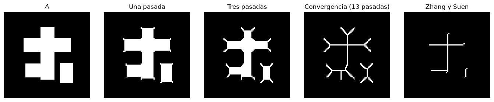
Los extremos del resultado se abren en horquillas, que son ramas parásitas propias de esta secuencia de patrones; la poda de la sección 3.7 las elimina. El algoritmo de Zhang y Suen, que usa condiciones de conectividad en lugar de plantillas, produce un trazo más limpio pero tampoco está libre de espolones.
3.6 Engrosamiento
El engrosamiento es el dual, \(A\odot B=A\cup(A\otimes B)\). En la práctica se adelgaza el complemento y se complementa el resultado, lo que puede dejar puntos aislados que se eliminan después (figura 9.22). Aquí se engrosa el adelgazamiento anterior.
def engrosar(A, pasadas=None):
adelg, _ = adelgazar(~A, pasadas=pasadas)
return ~adelg
E = ndi.binary_dilation(Tf, cuadrado(3)) # objeto delgado de partida
margen = 8 # evita que el marco de la imagen
E_c = np.pad(~E, margen, constant_values=True) # se trate como borde del fondo
E_c_thin, _ = adelgazar(E_c, pasadas=4)
E_c_thin = E_c_thin[margen:-margen, margen:-margen]
E_thick = ~E_c_thin
E_limpio = morf.remove_small_objects(E_thick, max_size=20) # puntos aislados
mostrar([E, ~E, E_c_thin, E_thick, E_limpio],
["$A$", "$A^c$", "$A^c$ adelgazado", "Complemento", "Sin puntos sueltos"],
ancho=2.5, nombre="ej_engrosamiento.png");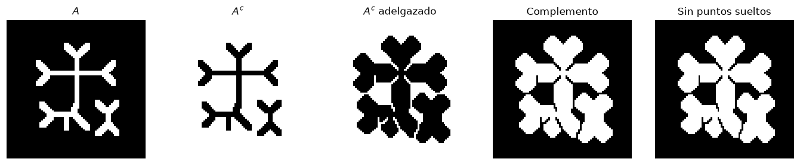
3.7 Esqueleto y poda
El esqueleto resume la forma con trazos de un pixel. Al calcularlo sobre contornos irregulares aparecen ramas parásitas (espolones). La poda las elimina en cuatro pasos (figura 9.25): se adelgaza con los ocho patrones de punto final durante \(k\) iteraciones (\(X_1\)), se detectan los puntos finales que quedaron (\(X_2\)), se dilatan condicionalmente dentro de \(A\) durante \(k\) iteraciones (\(X_3\)) y se une, \(X_4=X_1\cup X_3\). El último paso recupera las ramas legítimas que la primera etapa acortó. El ejemplo usa las astillas de hueso ya etiquetadas.
# patrones de punto final: un pixel de objeto con un solo vecino
pf_hit = [np.array([[0, 0, 0], [1, 1, 0], [0, 0, 0]], bool),
np.array([[1, 0, 0], [0, 1, 0], [0, 0, 0]], bool)]
pf_miss = [np.array([[0, 1, 1], [0, 0, 1], [0, 1, 1]], bool),
np.array([[0, 1, 1], [1, 0, 1], [1, 1, 1]], bool)]
PUNTO_FINAL = []
for h, m in zip(pf_hit, pf_miss):
PUNTO_FINAL += rotaciones(h, m)
def puntos_finales(A):
pf = np.zeros_like(A)
for hit, miss in PUNTO_FINAL:
pf |= ndi.binary_hit_or_miss(A, hit, miss)
return pf
def podar(A, k=3):
X1 = A.copy()
for _ in range(k):
X1 &= ~puntos_finales(X1)
X2 = puntos_finales(X1)
X3 = X2.copy()
for _ in range(k):
X3 = ndi.binary_dilation(X3, cuadrado(3)) & A
return X1 | X3, X1, X2
# los dos huesos largos, con el contorno irregular del umbral original
grandes = (etiquetas == 1 + int(np.argmax(areas))) | (etiquetas == 1 + int(np.argsort(-areas)[1]))
huesos = umbral & ndi.binary_dilation(grandes, cuadrado(9))
esq = morf.skeletonize(huesos, method="zhang")
podado, X1, X2 = podar(esq, k=6)
ys, xs = np.where(huesos)
r = (slice(ys.min() - 5, ys.max() + 6), slice(xs.min() - 20, xs.max() + 21))
mostrar([huesos[r], esq[r], X1[r], podado[r]],
["Huesos umbralizados", "Esqueleto", "$X_1$, seis puntos finales quitados",
"$X_4$, podado"], ancho=2.2, alto=4.4, nombre="ej_esqueleto_poda.png")
print("pixeles del esqueleto:", esq.sum(), " tras la poda:", podado.sum())pixeles del esqueleto: 490 tras la poda: 465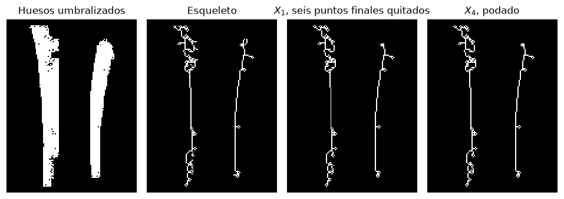
4. Reconstrucción morfológica
La dilatación geodésica de tamaño 1 de un marcador \(F\) respecto de una máscara \(G\) es \(D^{(1)}_G(F)=(F\oplus B)\cap G\), y la reconstrucción por dilatación es su iteración hasta convergencia, \(R_G(F)=D^{(k)}_G(F)\) con \(D^{(k)}=D^{(k-1)}\). El llenado de regiones y la extracción de componentes conexas de la sección anterior son casos particulares, con marcador una semilla y máscara \(A^c\) o \(A\). La apertura por reconstrucción usa como marcador la erosión de la imagen, \(O^{(n)}_R=R_A(A\ominus nB)\), y recupera completos los objetos que sobreviven a la erosión, sin deformarlos como hace la apertura ordinaria.
El ejemplo clásico (figura 9.29) busca los caracteres con trazos verticales largos. Se erosiona con una línea vertical de \(51\times1\) y se reconstruye.
texto2 = gonzalez(9, "Fig0929(a)(text_image).tif", binaria=True)
linea = np.ones((51, 1), dtype=bool)
marcador = ndi.binary_erosion(texto2, linea)
ape_ord = ndi.binary_dilation(marcador, linea) # apertura ordinaria
ape_rec = morf.reconstruction(marcador.astype(np.uint8), texto2.astype(np.uint8),
method="dilation").astype(bool)
r = (slice(0, 918), slice(0, 1060))
mostrar([texto2[r], marcador[r], ape_ord[r], ape_rec[r]],
["Texto original", r"Marcador $A\ominus B$, $B$ línea de $51\times1$",
"Apertura ordinaria", "Apertura por reconstrucción"],
ncol=2, ancho=5.2, alto=2.4, nombre="ej_reconstruccion_texto.png");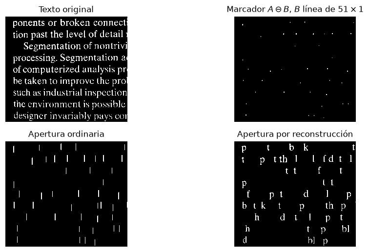
Dos usos más de la reconstrucción. Para llenar huecos, el marcador vale \(1-A\) en el borde de la imagen y \(0\) en el interior, la máscara es \(A^c\), y el resultado es \(H=\left[R_{A^c}(F)\right]^c\). Para eliminar los objetos que tocan el borde, el marcador vale \(A\) en el borde y \(0\) en el interior, la máscara es \(A\), y el resultado es \(A-R_A(F)\).
def llenar_huecos_rec(A):
F = np.zeros_like(A)
F[0, :], F[-1, :], F[:, 0], F[:, -1] = ~A[0, :], ~A[-1, :], ~A[:, 0], ~A[:, -1]
R = morf.reconstruction(F.astype(np.uint8), (~A).astype(np.uint8),
method="dilation").astype(bool)
return ~R
def limpiar_borde_rec(A):
F = np.zeros_like(A)
F[0, :], F[-1, :], F[:, 0], F[:, -1] = A[0, :], A[-1, :], A[:, 0], A[:, -1]
R = morf.reconstruction(F.astype(np.uint8), A.astype(np.uint8),
method="dilation").astype(bool)
return A & ~R
# recorte entre dos espacios interlineales
vacias = np.where(texto2.sum(axis=1) == 0)[0]
y0 = vacias[vacias > 380][0]
y1 = vacias[vacias > y0 + 200][0]
sub = texto2[y0:y1, 0:900]
lleno = llenar_huecos_rec(sub)
sin_borde = limpiar_borde_rec(sub)
assert np.array_equal(lleno, ndi.binary_fill_holes(sub))
mostrar([sub, lleno, sin_borde],
["Texto", "Huecos llenados por reconstrucción", "Sin objetos que tocan el borde"],
ncol=1, ancho=8.5, alto=2.4, nombre="ej_reconstruccion_huecos_borde.png");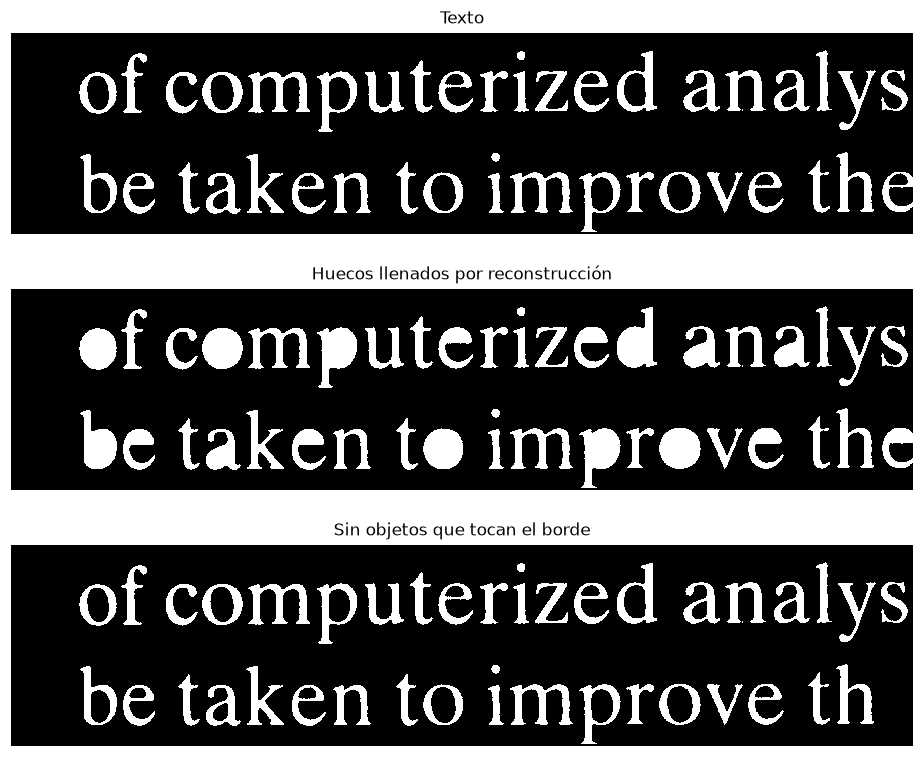
5. Morfología en escala de grises
5.1 Dilatación y erosión como máximo y mínimo locales
Con un elemento estructurante plano, \((f\oplus B)(x)=\max_{b\in B}f(x-b)\) y \((f\ominus B)(x)=\min_{b\in B}f(x+b)\). Conviene verlo primero en una dimensión. La fila central de la TC de cráneo es un perfil \(f(x)\); la dilatación es su envolvente superior y la erosión la inferior, y la apertura y el cierre recortan los picos y rellenan los valles más angostos que \(B\).
ct = gonzalez(9, "Fig0939(a)(headCT-Vandy).tif")
fila = ct[300, 60:460]
B1d = np.ones(9, dtype=bool)
f_dil = ndi.grey_dilation(fila, footprint=B1d)
f_ero = ndi.grey_erosion(fila, footprint=B1d)
f_ape = ndi.grey_opening(fila, footprint=B1d)
f_cie = ndi.grey_closing(fila, footprint=B1d)
x = np.arange(fila.size)
fig, axs = plt.subplots(1, 2, figsize=(11, 3.2), sharey=True)
axs[0].plot(x, fila, "k", lw=1.2, label="$f$")
axs[0].plot(x, f_dil, color="#3C72E8", lw=1, label=r"$f\oplus B$")
axs[0].plot(x, f_ero, color="#8c1515", lw=1, label=r"$f\ominus B$")
axs[0].set_title("Dilatación y erosión, $B$ de 9 muestras")
axs[1].plot(x, fila, "k", lw=1.2, label="$f$")
axs[1].plot(x, f_ape, color="#3C72E8", lw=1, label=r"$f\circ B$")
axs[1].plot(x, f_cie, color="#8c1515", lw=1, label=r"$f\bullet B$")
axs[1].set_title("Apertura y cierre")
for ax in axs:
ax.legend(loc="upper right", fontsize=8); ax.set_xlabel("$x$")
ax.grid(color="0.9")
axs[0].set_ylabel("Intensidad")
plt.tight_layout()
guardar(fig, "ej_gris_perfil.png")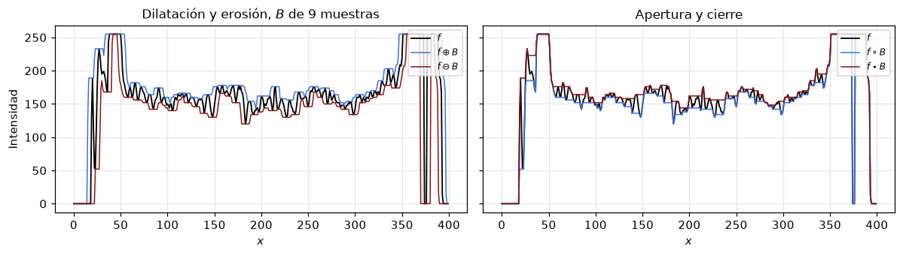
En dos dimensiones el efecto es el mismo, pixel a pixel. Con un disco de radio 2 sobre la TC (figura 9.35), la dilatación agranda las zonas claras y borra los detalles oscuros pequeños; la erosión hace lo contrario.
ct_dil = ndi.grey_dilation(ct, footprint=disco(2))
ct_ero = ndi.grey_erosion(ct, footprint=disco(2))
mostrar([ct, ct_dil, ct_ero], ["$f$", r"$f\oplus B$, disco $r=2$", r"$f\ominus B$"],
ancho=3.2, vmin=0, vmax=255, nombre="ej_gris_ct.png");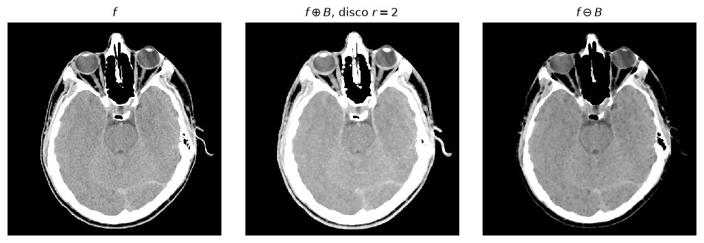
5.2 Apertura y cierre en escala de grises
\(f\circ B\) elimina los detalles claros menores que \(B\) y \(f\bullet B\) los oscuros. Con un disco de radio 5 (figura 9.37) la apertura atenúa los puntos brillantes y el cierre los oscuros, y la combinación de ambos es un filtro alternado secuencial que suaviza en los dos sentidos.
ct_ape = ndi.grey_opening(ct, footprint=disco(5))
ct_cie = ndi.grey_closing(ct, footprint=disco(5))
ct_alt = ndi.grey_closing(ct_ape, footprint=disco(5))
mostrar([ct, ct_ape, ct_cie, ct_alt],
["$f$", r"$f\circ B$, disco $r=5$", r"$f\bullet B$", r"$(f\circ B)\bullet B$"],
ancho=2.9, vmin=0, vmax=255, nombre="ej_gris_apertura_cierre_ct.png");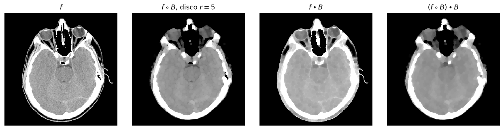
5.3 Gradiente morfológico
\(g=(f\oplus B)-(f\ominus B)\) es grande donde dentro de la ventana coexisten valores altos y bajos, es decir en los bordes, y es isotrópico si \(B\) lo es (figura 9.38).
B3 = cuadrado(3)
grad = ndi.grey_dilation(ct, footprint=B3) - ndi.grey_erosion(ct, footprint=B3)
mostrar([ct, ndi.grey_dilation(ct, footprint=B3), ndi.grey_erosion(ct, footprint=B3), grad],
["$f$", r"$f\oplus B$", r"$f\ominus B$", "Gradiente morfológico"],
ancho=2.9, vmin=0, vmax=255, nombre="ej_gradiente_ct.png");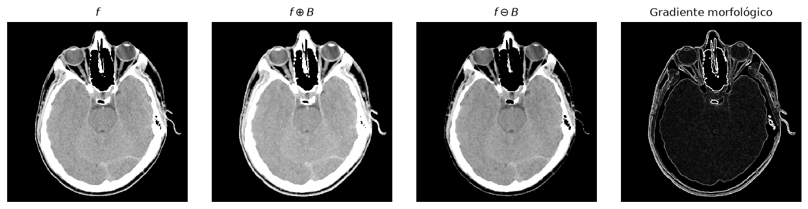
5.4 Top-hat y bottom-hat
\(T_{hat}(f)=f-f\circ B\) conserva los detalles claros menores que \(B\) y elimina el fondo que varía lentamente; \(B_{hat}(f)=f\bullet B-f\) hace lo propio con los detalles oscuros. La imagen de granos de arroz (figura 9.40) tiene una iluminación que decae hacia abajo, de modo que un umbral global de Otsu pierde los granos inferiores. Tras el top-hat con un disco de radio 40 el fondo es plano y el mismo umbral los recupera.
def otsu(img):
"""Umbral de Otsu a partir del histograma de 256 niveles."""
h, _ = np.histogram(img, bins=256, range=(0, 256))
p = h / h.sum()
w0 = np.cumsum(p)
m = np.cumsum(p * np.arange(256))
mG = m[-1]
with np.errstate(divide="ignore", invalid="ignore"):
sigma_b = (mG * w0 - m) ** 2 / (w0 * (1 - w0))
sigma_b[~np.isfinite(sigma_b)] = 0
return int(np.argmax(sigma_b))
arroz = gonzalez(9, "Fig0940(a)(rice_image_with_intensity_gradient).tif")
B40 = morf.disk(40, decomposition="sequence")
fondo = morf.opening(arroz, B40)
tophat = arroz - fondo
t1, t2 = otsu(arroz), otsu(np.clip(tophat, 0, 255))
mostrar([arroz, arroz > t1, fondo, tophat, tophat > t2],
["Arroz, iluminación no uniforme", f"Otsu directo, $T={t1}$",
r"$f\circ B$, disco $r=40$", "Top-hat", f"Otsu sobre el top-hat, $T={t2}$"],
ancho=2.5, nombre="ej_tophat_arroz.png");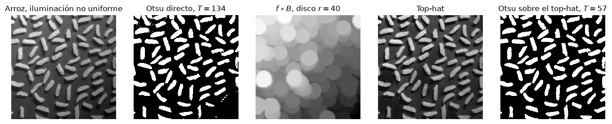
El bottom-hat es el dual para estructuras oscuras sobre fondo claro. En texto oscuro con una iluminación que decae (figura 10.49 del libro, capítulo de segmentación), el cierre con un disco mayor que el grosor de las letras estima el fondo y la diferencia deja sólo las letras.
texto_s = gonzalez(10, "Fig1049(a)(spot_shaded_text_image).tif")
cierre_s = morf.closing(texto_s, morf.disk(10, decomposition="sequence"))
bottomhat = cierre_s - texto_s
t3, t4 = otsu(texto_s), otsu(np.clip(bottomhat, 0, 255))
mostrar([texto_s, texto_s < t3, cierre_s, bottomhat, bottomhat > t4],
["Texto sombreado", f"Otsu directo, $T={t3}$", r"$f\bullet B$, disco $r=10$",
"Bottom-hat", f"Otsu sobre el bottom-hat, $T={t4}$"],
ancho=2.5, nombre="ej_bottomhat_texto.png");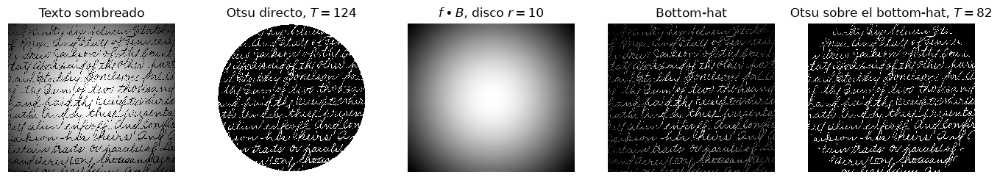
5.5 Granulometría
Aperturas con discos crecientes eliminan primero las partículas pequeñas. El área que se pierde entre un radio y el siguiente es el espectro de patrones, cuyos picos indican los tamaños dominantes. En la imagen de tarugos de madera (figura 9.41) hay dos tamaños, y el espectro muestra dos picos sin necesidad de segmentar cada tarugo.
tarugos = gonzalez(9, "Fig0941(a)(wood_dowels).tif")
suave = morf.closing(morf.opening(tarugos, morf.disk(5, decomposition="sequence")),
morf.disk(5, decomposition="sequence"))
radios = np.arange(5, 36)
areas = np.array([morf.opening(suave, morf.disk(int(r), decomposition="sequence")).sum()
for r in radios])
espectro = -np.diff(areas)
fig, axs = plt.subplots(1, 3, figsize=(11.5, 3.3))
axs[0].imshow(tarugos, cmap="gray"); axs[0].set_title("Tarugos de madera"); axs[0].axis("off")
axs[1].imshow(morf.opening(suave, morf.disk(20, decomposition="sequence")), cmap="gray")
axs[1].set_title(r"$f\circ B$, disco $r=20$"); axs[1].axis("off")
axs[2].bar(radios[1:], espectro / espectro.max(), color="#3C72E8", width=0.8)
axs[2].set_xlabel("Radio de $B$"); axs[2].set_ylabel("Área perdida (normalizada)")
axs[2].set_title("Espectro de patrones"); axs[2].grid(axis="y", color="0.9")
plt.tight_layout()
guardar(fig, "ej_granulometria_tarugos.png")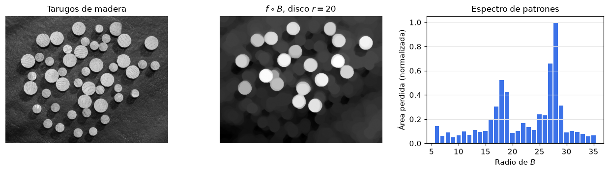
5.6 Segmentación de textura
Dos regiones con partículas de distinto tamaño (figura 9.43) se separan con dos operaciones y un gradiente. El cierre con un disco mayor que las partículas pequeñas las elimina; la apertura con un disco mayor que la separación entre las partículas grandes elimina los huecos claros entre ellas; el gradiente morfológico del resultado es la frontera entre las dos texturas.
blobs = gonzalez(9, "Fig0943(a)(dark_blobs_on_light_background).tif")
cierre_b = morf.closing(blobs, morf.disk(30, decomposition="sequence"))
apertura_b = morf.opening(cierre_b, morf.disk(60, decomposition="sequence"))
borde_b = morf.dilation(apertura_b, cuadrado(3)) - morf.erosion(apertura_b, cuadrado(3))
fig, axs = mostrar([blobs, cierre_b, apertura_b, blobs],
["Dos texturas", r"$f\bullet B$, disco $r=30$",
r"$(f\bullet B)\circ B'$, disco $r=60$", "Frontera superpuesta"],
ancho=2.9, vmin=0, vmax=255)
axs[0, 3].contour(borde_b > 0, levels=[0.5], colors="#ff2fd0", linewidths=1.2)
guardar(fig, "ej_textura_blobs.png")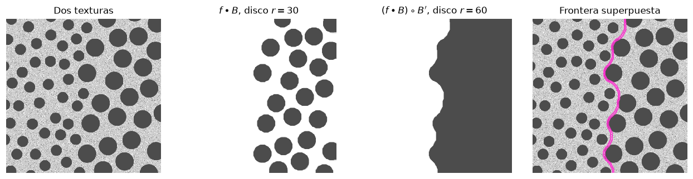
6. Aplicación 1. Otsu mejorado con operadores morfológicos
El umbral de Otsu separa dos clases de intensidad, pero no sabe nada de la forma ni de la conectividad. Sobre una MRI de cerebro T1 con contraste, el umbral que separa tejido de fondo incluye también el cuero cabelludo, el cráneo y pixeles sueltos de ruido, y deja huecos en los surcos y ventrículos. Los operadores morfológicos corrigen cada uno de esos defectos con una operación específica.
6.1 Máscara de cerebro
- Umbral de Otsu sobre el corte T1c.
- Apertura con un disco de radio 4, que corta los puentes delgados entre el cerebro y el anillo del cráneo y elimina los pixeles aislados.
- Componente conexa mayor, que es el parénquima.
- Dilatación condicional dentro del umbral original, \((X\oplus B)\cap M_0\), que devuelve la corteza que la apertura había recortado sin traer de vuelta el cráneo.
- Llenado de huecos, que recupera los surcos y los ventrículos.
t1c = mri("IM17_axt1c.tiff")
flair = mri("IM17_axt2FLAIR.tiff")
T_cabeza = otsu(t1c)
m0 = t1c > T_cabeza # Otsu directo
m1 = ndi.binary_opening(m0, disco(4)) # apertura
lab, n = ndi.label(m1)
tam = ndi.sum(m1, lab, range(1, n + 1))
m2 = lab == (1 + int(np.argmax(tam))) # componente mayor
m3 = ndi.binary_dilation(m2, disco(4)) & m0 # dilatacion condicional
cerebro = ndi.binary_fill_holes(m3) # llenado de huecos
_, n0 = ndi.label(m0)
print(f"umbral de Otsu T = {T_cabeza}")
print(f"componentes tras Otsu: {n0}; tras la apertura: {n}")
print(f"area: Otsu {m0.sum()}, componente mayor {m2.sum()}, "
f"mascara final {cerebro.sum()} pixeles")
fig, axs = mostrar([t1c, m0, m1, m2, m3, cerebro, t1c, t1c],
["T1 con contraste", f"Otsu, $T={T_cabeza}$",
"Apertura, disco $r=4$", "Componente mayor",
"Dilatación condicional", "Huecos llenados",
"Otsu directo", "Máscara final"],
ncol=4, ancho=2.9, vmin=0, vmax=255)
axs[1, 2].contour(m0, levels=[0.5], colors="#25e0e0", linewidths=0.5)
axs[1, 3].contour(cerebro, levels=[0.5], colors="#25e0e0", linewidths=1.0)
guardar(fig, "app_otsu_cerebro.png")umbral de Otsu T = 38
componentes tras Otsu: 33; tras la apertura: 15
area: Otsu 67394, componente mayor 49046, mascara final 50556 pixeles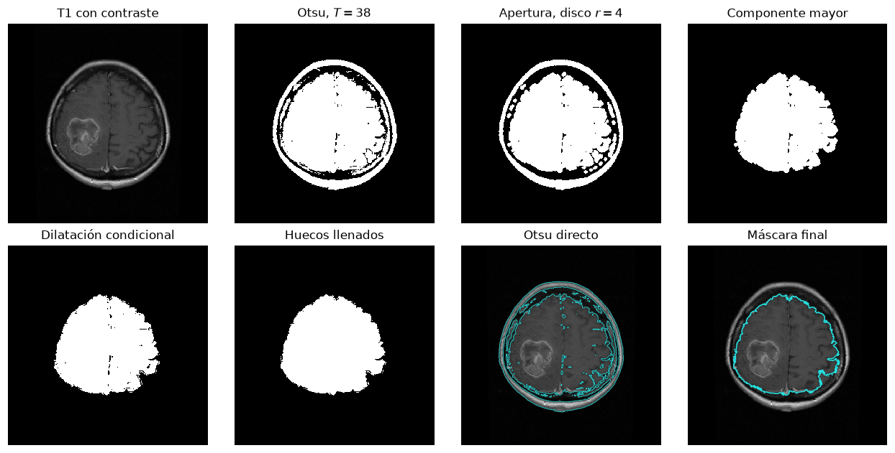
6.2 El tumor con realce de contraste
Dentro de la máscara de cerebro, Otsu separa el tejido que capta contraste del resto. El resultado contiene el anillo de realce del tumor, pero también vasos y fragmentos de corteza, y el centro necrótico queda vacío porque no capta contraste. La apertura elimina los vasos, la componente mayor aísla el anillo, y como el anillo está interrumpido en algunos puntos, un cierre con un disco mayor que las interrupciones lo vuelve una curva cerrada antes del llenado de huecos, que lo convierte en la lesión completa.
T_tumor = otsu(t1c[cerebro])
u0 = (t1c > T_tumor) & cerebro
u1 = ndi.binary_opening(u0, disco(2))
lab_u, n_u = ndi.label(u1)
tam_u = ndi.sum(u1, lab_u, range(1, n_u + 1))
u2 = lab_u == (1 + int(np.argmax(tam_u)))
u3 = ndi.binary_closing(u2, disco(7)) # cierra el anillo
tumor_suave = ndi.binary_fill_holes(u3) # y se llena
_, n_u0 = ndi.label(u0)
print(f"umbral de Otsu dentro del cerebro T = {T_tumor}")
print(f"componentes: Otsu {n_u0}, tras la apertura {n_u}")
print(f"area del anillo {u2.sum()} pixeles, de la lesion llena {tumor_suave.sum()} pixeles")
z = (slice(180, 360), slice(100, 320)) # ventana sobre el tumor
fig, axs = mostrar([t1c[z], u0[z], u1[z], u2[z], u3[z], tumor_suave[z], t1c[z], t1c[z]],
[f"T1c, Otsu dentro del cerebro $T={T_tumor}$", "Umbral",
"Apertura, disco $r=2$", "Componente mayor",
"Cierre, disco $r=7$", "Huecos llenados",
"Otsu directo", "Resultado"],
ncol=4, ancho=2.9, vmin=0, vmax=255)
axs[1, 2].contour(u0[z], levels=[0.5], colors="#25e0e0", linewidths=0.6)
axs[1, 3].contour(tumor_suave[z], levels=[0.5], colors="#ff2fd0", linewidths=1.2)
guardar(fig, "app_otsu_tumor.png")umbral de Otsu dentro del cerebro T = 80
componentes: Otsu 28, tras la apertura 6
area del anillo 3802 pixeles, de la lesion llena 6240 pixeles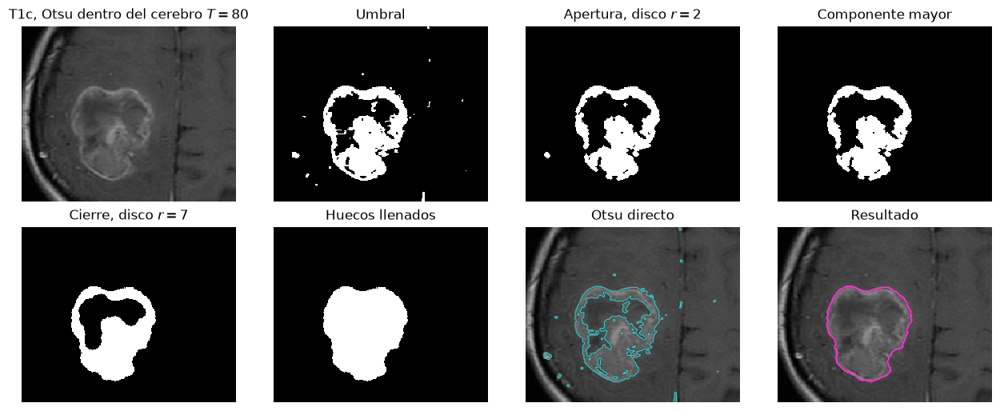
6.3 Comparación con el umbral sin posproceso
En la lámina de la clase se contrastan el umbral directo y el resultado morfológico sobre la misma ventana. La medida de solapamiento de Dice entre ambos cuantifica cuánto cambió la máscara; aquí no hay referencia manual, de modo que la comparación es descriptiva.
def dice(a, b):
return 2 * (a & b).sum() / (a.sum() + b.sum())
print(f"Dice entre Otsu directo y lesion final: {dice(u0, tumor_suave):.3f}")
print(f"Dice entre Otsu directo y mascara de cerebro: {dice(m0, cerebro):.3f}")
fig, axs = mostrar([t1c, t1c, flair],
["Otsu directo (cian) sobre T1c", "Resultado morfológico (magenta)",
"El mismo contorno sobre T2 FLAIR"], ancho=3.6, vmin=0, vmax=255)
axs[0, 0].contour(u0, levels=[0.5], colors="#25e0e0", linewidths=0.6)
axs[0, 1].contour(tumor_suave, levels=[0.5], colors="#ff2fd0", linewidths=1.2)
axs[0, 1].contour(cerebro, levels=[0.5], colors="#fde39e", linewidths=0.8)
axs[0, 2].contour(tumor_suave, levels=[0.5], colors="#ff2fd0", linewidths=1.2)
guardar(fig, "app_otsu_comparacion.png")Dice entre Otsu directo y lesion final: 0.732
Dice entre Otsu directo y mascara de cerebro: 0.848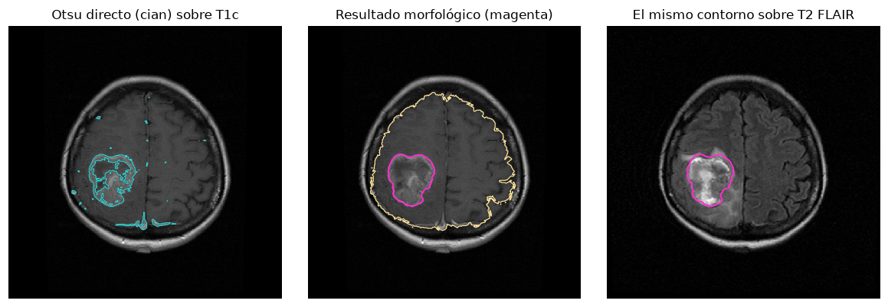
7. Aplicación 2. Realce de contraste con filtros morfológicos
El top-hat contiene los detalles claros menores que \(B\) y el bottom-hat los oscuros. Sumar el primero y restar el segundo acentúa ambos respecto del fondo local, \[g=f+T_{hat}(f)-B_{hat}(f)=f+(f-f\circ B)-(f\bullet B-f),\] que es el realce de contraste morfológico. El tamaño de \(B\) fija la escala de los detalles que se acentúan. Una alternativa es el filtro de contraste por alternancia, que reemplaza cada pixel por su dilatación o su erosión según cuál esté más cerca del valor original, y que produce bordes abruptos sin sobreimpulsos.
def realce_tophat(f, B):
th = f - ndi.grey_opening(f, footprint=B)
bh = ndi.grey_closing(f, footprint=B) - f
return np.clip(f + th - bh, 0, 255), th, bh
def contraste_alternado(f, B):
d = ndi.grey_dilation(f, footprint=B)
e = ndi.grey_erosion(f, footprint=B)
return np.where(d - f < f - e, d, e)
def contraste_rms(f, mascara):
v = f[mascara]
return v.std() / v.mean()
g5, th5, bh5 = realce_tophat(t1c, disco(5))
g12, th12, bh12 = realce_tophat(t1c, disco(12))
alt = contraste_alternado(t1c, disco(2))
print("contraste RMS dentro del cerebro")
for nombre, im in [("original", t1c), ("realce r=5", g5), ("realce r=12", g12),
("alternado r=2", alt)]:
print(f" {nombre:<14s} {contraste_rms(im, cerebro):.3f}")
mostrar([t1c, th12, bh12, g5, g12, alt],
["T1c original", "Top-hat, disco $r=12$", "Bottom-hat, disco $r=12$",
"Realce, disco $r=5$", "Realce, disco $r=12$", "Contraste alternado, $r=2$"],
ncol=3, ancho=3.4, vmin=0, vmax=255, nombre="app_contraste_cerebro.png");contraste RMS dentro del cerebro
original 0.207
realce r=5 0.335
realce r=12 0.387
alternado r=2 0.239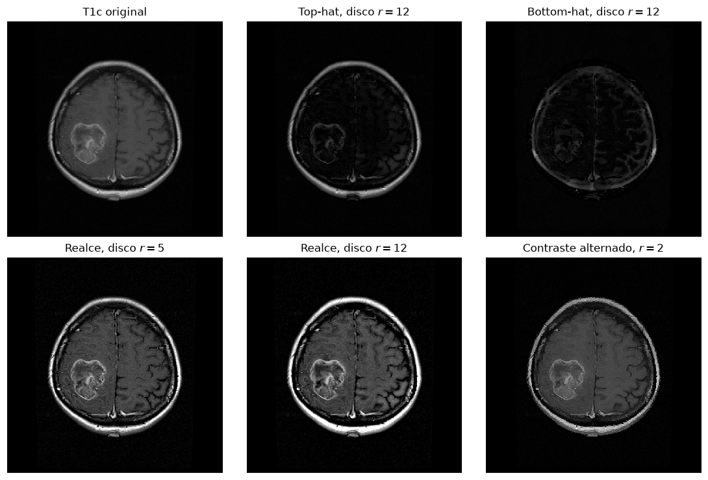
La ventana sobre el tumor y un perfil de intensidad que lo atraviesa muestran el efecto. El realce aumenta la diferencia entre el anillo que capta contraste y el tejido vecino, y el filtro alternado endurece las transiciones. Ambos amplifican también el ruido de fondo, de modo que en la práctica se aplican después de un suavizado o con un elemento estructurante acorde al tamaño de la estructura de interés.
fila_y = 268
fig = plt.figure(figsize=(11.5, 6.2))
gs = fig.add_gridspec(2, 3, height_ratios=[1.35, 1])
ims = [(t1c, "T1c original"), (g12, "Realce, disco $r=12$"), (alt, "Contraste alternado")]
for k, (im, t) in enumerate(ims):
ax = fig.add_subplot(gs[0, k])
ax.imshow(im[z], cmap="gray", vmin=0, vmax=255); ax.set_title(t); ax.axis("off")
ax.axhline(fila_y - z[0].start, color="#fde39e", lw=0.8)
ax = fig.add_subplot(gs[1, :])
xs = np.arange(z[1].start, z[1].stop)
ax.plot(xs, t1c[fila_y, z[1]], "k", lw=1.2, label="Original")
ax.plot(xs, g12[fila_y, z[1]], color="#3C72E8", lw=1, label="Realce $r=12$")
ax.plot(xs, alt[fila_y, z[1]], color="#8c1515", lw=1, label="Alternado")
ax.set_xlabel("$x$"); ax.set_ylabel("Intensidad"); ax.grid(color="0.9")
ax.set_title(f"Perfil en la fila {fila_y}"); ax.legend(fontsize=8, loc="upper right")
plt.tight_layout()
guardar(fig, "app_contraste_zoom.png")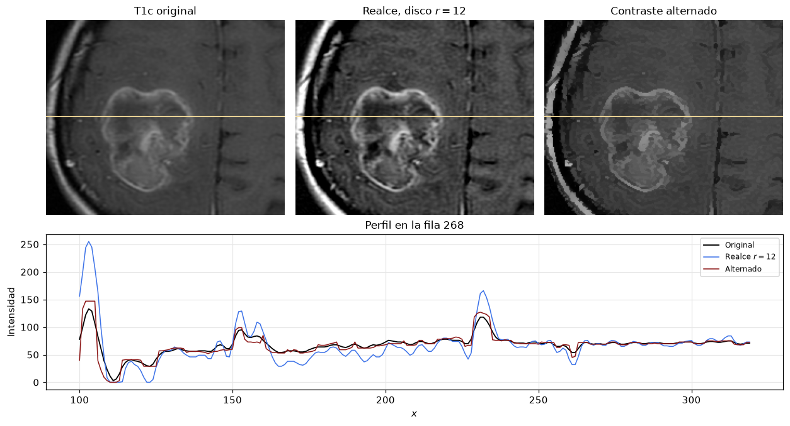
El mismo esquema sobre el corte T2 FLAIR, donde el edema es hiperintenso, y el histograma dentro del cerebro antes y después del realce. El histograma se ensancha, que es la lectura cuantitativa del aumento de contraste.
gf, _, _ = realce_tophat(flair, disco(8))
fig, axs = plt.subplots(1, 3, figsize=(11.5, 3.4))
axs[0].imshow(flair, cmap="gray", vmin=0, vmax=255); axs[0].set_title("T2 FLAIR"); axs[0].axis("off")
axs[1].imshow(gf, cmap="gray", vmin=0, vmax=255); axs[1].set_title("Realce, disco $r=8$"); axs[1].axis("off")
axs[2].hist(flair[cerebro], bins=64, range=(0, 255), color="0.5", alpha=0.8, label="Original")
axs[2].hist(gf[cerebro], bins=64, range=(0, 255), color="#3C72E8", alpha=0.6, label="Realce")
axs[2].set_xlabel("Intensidad"); axs[2].set_ylabel("Pixeles del cerebro")
axs[2].set_title("Histograma dentro del cerebro"); axs[2].legend(fontsize=8)
axs[2].grid(color="0.9")
plt.tight_layout()
guardar(fig, "app_contraste_flair.png")
print(f"contraste RMS FLAIR: original {contraste_rms(flair, cerebro):.3f}, "
f"realce {contraste_rms(gf, cerebro):.3f}")contraste RMS FLAIR: original 0.432, realce 0.574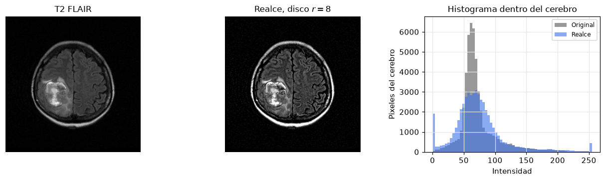
Síntesis esquemática
- Dilatación y erosión son máximos y mínimos locales; en binario se reducen a tocar y caber.
- Apertura y cierre eliminan detalles claros u oscuros menores que \(B\); sus residuos, top-hat y bottom-hat, aíslan esos detalles y corrigen fondos no uniformes.
- Los algoritmos de frontera, llenado, componentes, envolvente, adelgazamiento y poda se construyen con las operaciones básicas, y la reconstrucción geodésica unifica varios de ellos.
- Un umbral global decide por intensidad; los operadores morfológicos corrigen después por forma, tamaño y conectividad.
- El realce morfológico de contraste amplifica los detalles de una escala elegida con \(B\) y conviene combinarlo con suavizado.